rm(list = ls())2 model setup
2.1 Aim: Read in environmental data and physiology functions
3 File information
~/Library/CloudStorage/Box-Box/Sarah and Molly’s Box/FHL data/code/set_up_workspace/Model_20210409_iter_small_barnacles_food.2.R
This is now set up to work with the desktop computer (different working directory) -1/20/21
This sets up all of the data and functions for the model predictions
This model is calibrated with Lisa’s data, and includes padilla bay chlorophyll seasonal data. To go back to Lisa’s dataset and check the calibration, please use this model setup.
This model uses lengths rather than tissue mass samples. Go back to previous models, e.g. Model_202006.._iter… for tissue mass
4 Datasets used are within the following directories:
If the file is opened within the .Rproj file, then the function here::here() will find the correct data file regardless of where this is being run. An alternative option is to set the root drive using knitr, but I’m having trouble doing this with quarto. Quarto seems to require that all the .qmd files live within the root directory.
5 Set up environment
Clear the global environment
Load libraries and set graphics theme:
Loading required package: stats4Loading required package: MatrixLoading required package: carDatalattice theme set by effectsTheme()
See ?effectsTheme for details.
Attaching package: 'nlme'The following object is masked from 'package:lme4':
lmListLoading required package: viridisLiteLoading required package: timechange
Attaching package: 'lubridate'The following objects are masked from 'package:base':
date, intersect, setdiff, union
Attaching package: 'dplyr'The following object is masked from 'package:nlme':
collapseThe following object is masked from 'package:bbmle':
sliceThe following objects are masked from 'package:stats':
filter, lagThe following objects are masked from 'package:base':
intersect, setdiff, setequal, union
Attaching package: 'tidyr'The following objects are masked from 'package:Matrix':
expand, pack, unpack
Attaching package: 'zoo'The following objects are masked from 'package:base':
as.Date, as.Date.numeric
Attaching package: 'gridExtra'The following object is masked from 'package:dplyr':
combine
Attaching package: 'kableExtra'The following object is masked from 'package:dplyr':
group_rowsToggle the period of interest (which 6 month period - the first or second?)
#Time period 1 or 2
timing <- 1Toggle the subset of barnacles used (specify only small baracles will be used for calculations)
#Which subset of barnacles
small_only<-"Y"Toggle plots on and off (turning plotting off will speed up the code)
#Turn plotting on and off (for the sake of speeding up the iterations)
figs <- "Y" #(Y or N)More toggles
#Food dynamics hypothesis
PadillaBay = "Y"
#Test run?
baby_model <- "Y" #Test run
baby_model <- "N" #All dataSet up dataframes to be used in plotting functional responses
#| echo: false
# Plotting values for functional responses
pred.dat <- data.frame(
Temp.n = rep(seq(from = 5, to = 40, length.out = 20), times = 3),
OperculumLength = rep(c(4.5, 5.5, 6.5),times = 3,each = 20),
sizeclass = as.factor(rep(c("small","medium", "large"),times = 3,each = 20))
)
pred.dat.aqua <- data.frame(
Temp.n = rep(seq(from = 5, to = 20, length.out = 20), times = 3),
OperculumLength = rep(c(4.5, 5.5, 6.5),times = 3,each = 20),
sizeclass = as.factor(rep(c("small","medium", "large"),times = 3,each = 20))
)
pred.dat.air <- data.frame(
Temp.n = rep(seq(from = 5, to = 40, length.out = 20), times = 3),
OperculumLength = rep(c(4.5, 5.5, 6.5),times = 3,each = 20),
sizeclass = as.factor(rep(c("small","medium", "large"),times = 3,each = 20))
)Set up climate change calculator
6 Read in opercular length growth data
Previous directories included: setwd(“C:/Users/eroberts/Box/PhotoAnalysis_Sp2020/datasheets_org/20201007_data”) setwd(“~/Box/PhotoAnalysis_Sp2020/datasheets_org/20201007_data”) setwd(“~/Box/PhotoAnalysis_Sp2020/FHL/datasheets_org/20201007_data”)
and setwd(“~/Box/Sarah and Molly’s Box/FHL data/growth_individual/ForSam_20201007”)
and setwd(“~/Library/CloudStorage/Box-Box/PhotoAnalysis_Sp2020/FHL/datasheets_org/20201007_data/probably final data set”)
# Note the here() function finds the file from the root directory. The root directory is set from running through the project in github.
growth.1 <- read.csv(here::here("data/growth_data/Scaled_data_Feb_Aug.csv"))
growth.2 <- read.csv(here::here("data/growth_data/Scaled_data_Aug_Mar.csv"))
# Quality control
growth.2 <- growth.2[growth.2$Elevation!="",] #one line of NA's
growth.1 <- growth.1[growth.1$growth.Aug.Feb>=-.1,] #one line of an outlier with a growth of >-0.1
# Structure dataframe
growth.1$Elevation <- as.factor(growth.1$Elevation)
growth.2$Elevation <- as.factor(growth.2$Elevation)
# Subset by size
small_only <- "Y"
if(small_only=="Y"){
small.1 <- growth.1[growth.1$Feb.Length >= 0.15 & growth.1$Feb.Length <= 0.30,]
small.2 <- growth.2[growth.2$Aug.Length >= 0.15 & growth.2$Aug.Length <= 0.30,]
growth.1 <- small.1
growth.2 <- small.2
}
# Subset the data for test run if flagged
if(baby_model=="Y"){
growth.1.ave <- growth.1 %>%
group_by(Elevation)%>%
dplyr::summarise(
n = n(),
growth.Aug.Feb = mean(growth.Aug.Feb, na.rm = TRUE),
Feb.Length = mean(Feb.Length, na.rm = TRUE),
Aug.Length = mean(Aug.Length, na.rm = TRUE)
)
growth.2.ave <- growth.2 %>%
group_by(Elevation)%>%
summarise(
n = n(),
growth.Mar.Aug = mean(growth.Mar.Aug, na.rm = TRUE),
Aug.Length = mean(Aug.Length, na.rm = TRUE),
Mar.Length = mean(Mar.Length, na.rm = TRUE)
)
growth.1 <- as.data.frame(growth.1.ave)
growth.2 <- as.data.frame(growth.2.ave)
}
if(figs == "Y"){
par(mfrow = c(1,2))
plot(growth.1$Feb.Length, growth.1$growth.Aug.Feb,
col = as.factor(growth.1$Elevation),
ylim = c(-.1,.5), xlim = c(.15,.3),
ylab = "Growth Feb to Aug (cm)",
xlab = "Initial length (cm)"
)
plot(growth.2$Aug.Length, growth.2$growth.Mar.Aug,
col = as.factor(growth.2$Elevation),
ylim = c(-.1,.25), xlim = c(.15,.3),
ylab = "Growth Aug to Mar (cm)",
xlab = "Initial length (cm)"
)
par(mfrow = c(1,3))
hist(growth.2$growth.Mar.Aug[growth.2$Elevation=="Upper"],
main = "Upper Mar - Aug", xlab = "Change in operculum length (cm)")
hist(growth.2$growth.Mar.Aug[growth.2$Elevation=="Mid"],
main = "Mid Mar - Aug", xlab = "Change in operculum length (cm)")
hist(growth.2$growth.Mar.Aug[growth.2$Elevation=="Low"],
main = "Low Mar - Aug", xlab = "Change in operculum length (cm)")
}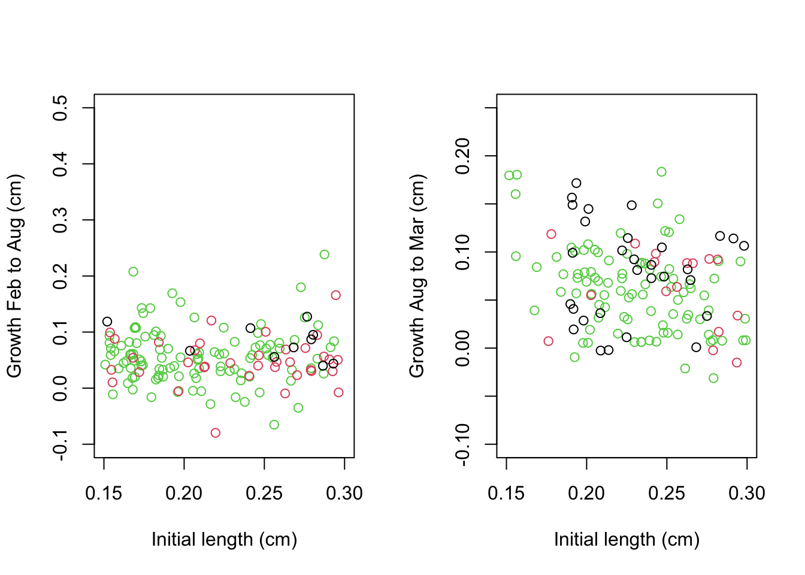
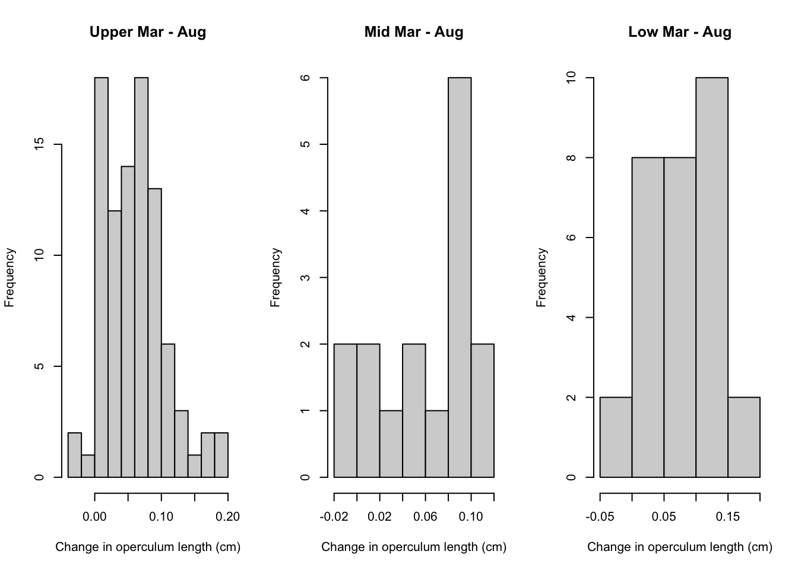
More growth plots and table
par(mfrow = c(1,2))
plot(as.factor(growth.2$Elevation), growth.2$growth.Mar.Aug, ylim = c(-.08, 0.25), ylab = "Growth (mm)", xlab = "Elevation")
plot(as.factor(growth.1$Elevation), growth.1$growth.Aug.Feb, ylim = c(-.08, 0.25), ylab = "", xlab = "Elevation")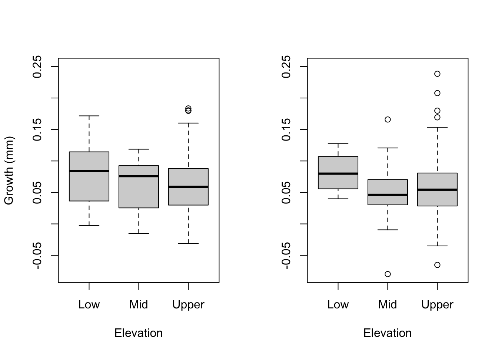
# No interactions:
par(mfrow = c(1,2))
# summary(lm(growth.1$growth.Aug.Feb~as.factor(growth.1$Elevation)+as.numeric(growth.1$Feb.Length)))
# Time 1
mod1 <- lm(growth.Aug.Feb~Elevation*Feb.Length, data = growth.1)
kbl(coef(summary(mod1)))%>%
kable_classic_2(full_width = F)| Estimate | Std. Error | t value | Pr(>|t|) | |
|---|---|---|---|---|
| (Intercept) | 0.1506457 | 0.0910366 | 1.6547820 | 0.1001023 |
| ElevationMid | -0.1066055 | 0.0999380 | -1.0667167 | 0.2878486 |
| ElevationUpper | -0.0981680 | 0.0941666 | -1.0424921 | 0.2988950 |
| Feb.Length | -0.2727793 | 0.3539495 | -0.7706730 | 0.4421377 |
| ElevationMid:Feb.Length | 0.2927743 | 0.3934002 | 0.7442148 | 0.4579346 |
| ElevationUpper:Feb.Length | 0.2992674 | 0.3718298 | 0.8048505 | 0.4222058 |
# No interactions
mod1 <- lm(growth.Aug.Feb~Elevation+Feb.Length, data = growth.1)
kbl(coef(summary(mod1)))%>%
kable_classic_2(full_width = F)| Estimate | Std. Error | t value | Pr(>|t|) | |
|---|---|---|---|---|
| (Intercept) | 0.0802769 | 0.0275039 | 2.9187498 | 0.0040599 |
| ElevationMid | -0.0325974 | 0.0168518 | -1.9343539 | 0.0549646 |
| ElevationUpper | -0.0232475 | 0.0160775 | -1.4459641 | 0.1502874 |
| Feb.Length | 0.0045558 | 0.0912726 | 0.0499146 | 0.9602573 |
dat1.emm <- emmeans(mod1, "Elevation")
# plot(dat1.emm)
#emmeans::emmip(mod1, growth.Mar.Aug ~ Elevation , CIs = TRUE)
dat1.emm.df <- as.data.frame(dat1.emm)
mid <- barplot(data = dat1.emm.df, emmean~Elevation,
ylim = c(0,.15), ylab = "Size-corrected growth (cm per 6-months)")
arrows(x0=mid, y0=dat1.emm.df$lower.CL, x1=mid,
y1=dat1.emm.df$upper.CL, code = 3, angle=90,
length=0.1)
(0.08126638 - 0.05801888) / 0.05801888[1] 0.4006885# Time 2
mod1 <- lm(data = growth.2, growth.Mar.Aug~Elevation*Aug.Length)
kbl(coef(summary(mod1)))%>%
kable_classic_2(full_width = F)| Estimate | Std. Error | t value | Pr(>|t|) | |
|---|---|---|---|---|
| (Intercept) | 0.0927026 | 0.0558446 | 1.6600097 | 0.0992863 |
| ElevationMid | 0.0459385 | 0.0940378 | 0.4885109 | 0.6259986 |
| ElevationUpper | 0.0819102 | 0.0633740 | 1.2924890 | 0.1984458 |
| Aug.Length | -0.0510427 | 0.2420486 | -0.2108778 | 0.8333078 |
| ElevationMid:Aug.Length | -0.2535982 | 0.3842576 | -0.6599694 | 0.5104234 |
| ElevationUpper:Aug.Length | -0.4437342 | 0.2742084 | -1.6182370 | 0.1079986 |
# No interactions
mod1 <- lm(data = growth.2, growth.Mar.Aug~Elevation+Aug.Length)
kbl(coef(summary(mod1)))%>%
kable_classic_2(full_width = F)| Estimate | Std. Error | t value | Pr(>|t|) | |
|---|---|---|---|---|
| (Intercept) | 0.1689942 | 0.0256045 | 6.6001825 | 0.0000000 |
| ElevationMid | -0.0101646 | 0.0137095 | -0.7414298 | 0.4597303 |
| ElevationUpper | -0.0195878 | 0.0091685 | -2.1364360 | 0.0344612 |
| Aug.Length | -0.3851085 | 0.1065605 | -3.6139895 | 0.0004255 |
dat1.emm <- emmeans(mod1, "Elevation")
# plot(dat1.emm)
#emmeans::emmip(mod1, growth.Mar.Aug ~ Elevation , CIs = TRUE)
dat1.emm.df <- as.data.frame(dat1.emm)
mid <- barplot(data = dat1.emm.df, emmean~Elevation,
ylim = c(0,.15), ylab = "")
arrows(x0=mid, y0=dat1.emm.df$lower.CL, x1=mid,
y1=dat1.emm.df$upper.CL, code = 3, angle=90,
length=0.1)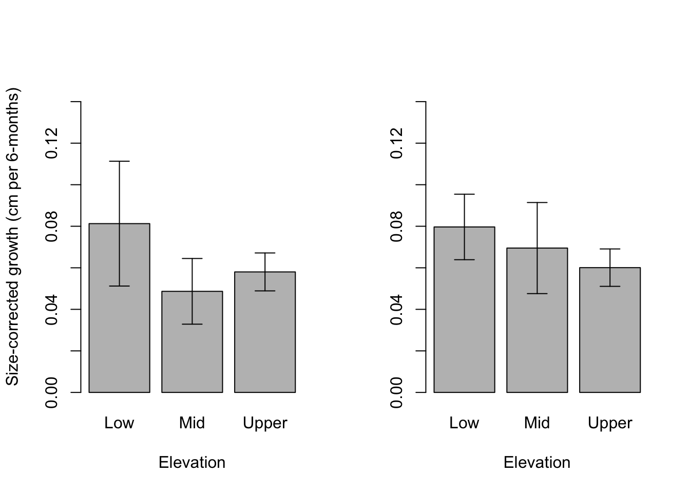
(0.08086259 - 0.05984264) / 0.05984264[1] 0.3512537Timepoint_1 <- as.POSIXct( "2018-02-04", format="%Y-%m-%d", tz = "GMT")
# Timepoint_2 <- as.POSIXct( "2018-08-13", format="%Y-%m-%d", tz = "GMT") #Changed 20210405 to avoid 1 day gap in data as loggers were switched out and photos were taken
Timepoint_1_end <- as.POSIXct( "2018-08-12", format="%Y-%m-%d", tz = "GMT")
Timepoint_2_start <- as.POSIXct( "2018-08-15", format="%Y-%m-%d", tz = "GMT")
Timepoint_3 <- as.POSIXct( "2019-03-01", format="%Y-%m-%d", tz = "GMT")7 Relationship between operculum and tissue mass
This information is not used in this model. It was used for the previous analysis of the larger barnacles.
Larger barnacles did not change in opercular length much, but their tissue mass and condition index varied. We were not able to quantify reproductive ouput, and reproductive timing confounded tissue gain and loss of larger barnacles. Given this issue, we chose to focus on the growth rates of small barnacles.
# ============================#
# Read in tissue mass data ####
# ============================#
#setwd("C:/Users/eroberts/Box/Sarah and Molly's Box/FHL data/length mass relationship/FHL Collected Barnacles")
#setwd("~/Box/Sarah and Molly's Box/FHL data/length mass relationship/FHL Collected Barnacles")
setwd("~/Library/CloudStorage/Box-Box/Sarah and Molly's Box/FHL data/length mass relationship/FHL Collected Barnacles")
len_mass_Feb18 <- read.csv(file = "FHL 201803_Mar.csv", stringsAsFactors = FALSE)
len_mass_Aug18 <- read.csv(file = "FHL 201808_Aug.csv", stringsAsFactors = FALSE)
len_mass_Mar19 <- read.csv(file = "FHL 201903_Mar.csv", stringsAsFactors = FALSE)8 Read in temperature data
Visually, this looks like: High – 1.97 m = 6.46 ft Mid – 1.55 m = 5.08 ft Low – 1.20 m = 3.93 ft Bars denote plus or minus 0.05 m (= 0.16 ft)
In email January 8, 2020, Gordon got: High = 1.98m Mid = 1.58m Low = 1.18m
From diagrams I know that the whole setup is about 3.5 ft from bottom to top, with 1 ft in between each layer of tiles. More like 2.5 bc not at edge
#setwd("~/Box/Sarah and Molly's Box/FHL data/HOBO data/Tides")
#setwd("C:/Users/eroberts/Box/Sarah and Molly's Box/FHL data/HOBO data/Tides")
# setwd("~/Library/CloudStorage/Box-Box/Sarah and Molly's Box/FHL data/HOBO data/Tides")
# setwd("~/Documents/GitHub/Bglandula_FHL_energetics/data/environmental_data")
# READING IN NEW TEMP DATASET ####
tempdat <- read.csv(here::here("data/environmental_data/TempAndWaterLevel_QC.20210401.csv"), stringsAsFactors = FALSE) #This is saved in r code HoboCombineFHL...v4.R
str(tempdat)'data.frame': 54803 obs. of 7 variables:
$ X : int 1 2 3 4 5 6 7 8 9 10 ...
$ datetime : chr "2017-08-07 00:45:00" "2017-08-07 01:00:00" "2017-08-07 01:15:00" "2017-08-07 01:30:00" ...
$ Upper : num 13.7 14.2 14.1 14.1 14 ...
$ Mid : num 13.3 14.2 14.1 14.1 14.1 ...
$ Low : num 13.2 14.1 14 14 14 ...
$ Water.Level: num NA 2.23 2.26 2.29 2.3 ...
$ Water.Temp : num 16.1 12.8 11.6 11.8 12.8 ...tempdat$datetime <- as.POSIXct(tempdat$datetime, tz = "GMT")
df.new <- tempdat
tempdat <- tempdat[!is.na(tempdat$Water.Level),]
subsetcheck1 <- as.POSIXct("2018-08-20 00:00:00")
subsetcheck2 <- as.POSIXct("2018-08-26 00:00:00")
tempdat_subset <- tempdat[tempdat$datetime > subsetcheck1&tempdat$datetime < subsetcheck2,]tempdat$Upper_air <- tempdat$Upper
tempdat$Upper_water <- tempdat$Upper
tempdat$Upper_air[tempdat$Water.Level>=1.97] <- NA
tempdat$Upper_water[tempdat$Water.Level<1.97] <- NA
par(mfrow = c(1,3))
# plot(tempdat$Upper_air ~ tempdat$datetime, col = "red")
# points(tempdat$Upper_water ~ tempdat$datetime, col = "blue")
plot(tempdat$Upper_air ~ tempdat$datetime, col = "red")
points(tempdat$Upper_water ~ tempdat$datetime, col = "blue")
tempdat$Mid_air <- tempdat$Mid
tempdat$Mid_water <- tempdat$Mid
tempdat$Mid_air[tempdat$Water.Level>=1.55] <- NA
tempdat$Mid_water[tempdat$Water.Level<1.55] <- NA
plot(tempdat$Mid_air ~ tempdat$datetime, col = "red")
points(tempdat$Mid_water ~ tempdat$datetime, col = "blue")
tempdat$Low_air <- tempdat$Low
tempdat$Low_water <- tempdat$Low
tempdat$Low_air[tempdat$Water.Level>=1.20] <- NA
tempdat$Low_water[tempdat$Water.Level<1.20] <- NA
plot(tempdat$Low_air ~ tempdat$datetime, col = "red")
points(tempdat$Low_water ~ tempdat$datetime, col = "blue")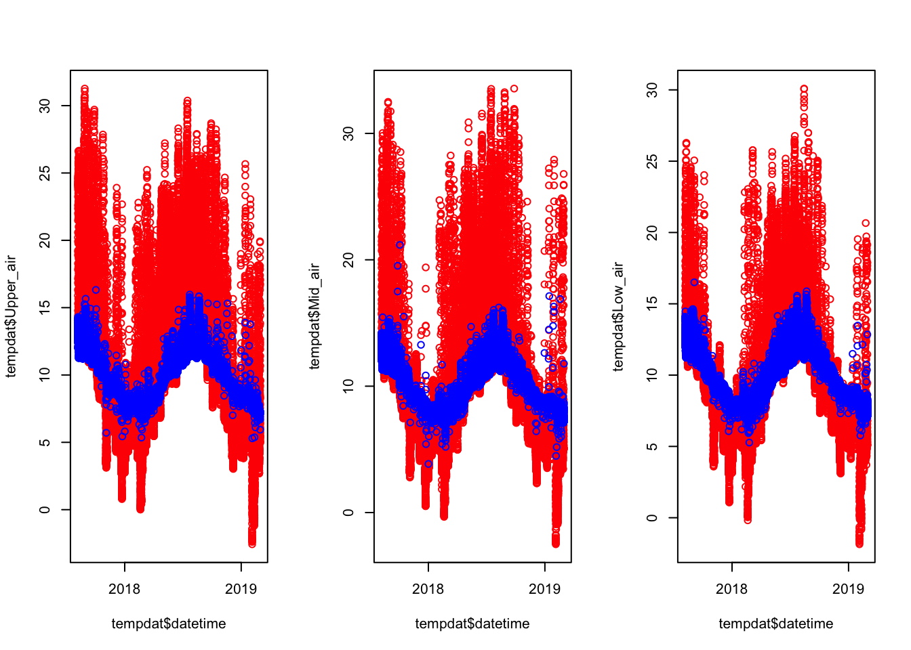
water.temp <- data.frame(
datetime = tempdat$datetime,
Upper = tempdat$Upper_water,
Mid = tempdat$Mid_water,
Low = tempdat$Low_water)
air.temp <- data.frame(
datetime = tempdat$datetime,
Upper = tempdat$Upper_air,
Mid = tempdat$Mid_air,
Low = tempdat$Low_air)
#if(timing == 1){
starttime <- Timepoint_1
endtime <- Timepoint_1_end
air.temp.1 <- air.temp[air.temp$datetime>=starttime & air.temp$datetime<= endtime & !is.na(air.temp$datetime),]
water.temp.1 <- water.temp[water.temp$datetime>=starttime & water.temp$datetime<= endtime & !is.na(water.temp$datetime),]
#}
#if(timing == 2){
starttime <- Timepoint_2_start
endtime <- Timepoint_3
air.temp.2 <- air.temp[air.temp$datetime>=starttime & air.temp$datetime<= endtime & !is.na(air.temp$datetime),]
water.temp.2 <- water.temp[water.temp$datetime>=starttime & water.temp$datetime<= endtime & !is.na(water.temp$datetime),]
#}
par(mfrow = c(1,1))
plot(tempdat$Upper, pch = ".")
points(tempdat$Mid, col = "blue", pch=".")
points(tempdat$Low, col = "orange", pch = ".")
title("Temps at the 3 tidal elevations over 1 year")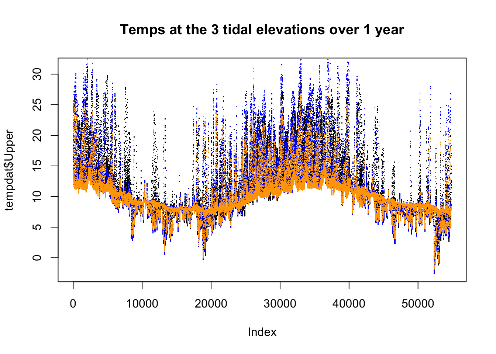
plot(tempdat_subset$Upper, pch = ".")
points(tempdat_subset$Mid, col = "blue", pch=".")
points(tempdat_subset$Low, col = "orange", pch = ".")
title("Temps of the 3 tidal elevations over one week")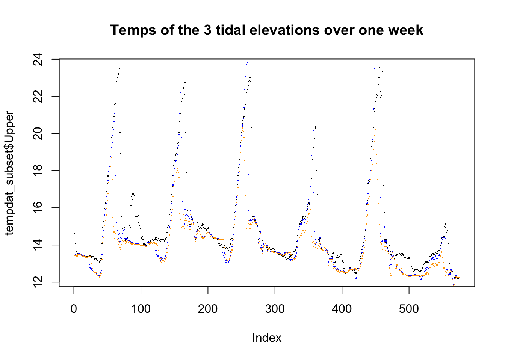
plot(air.temp.1$Upper, pch = ".")
points(air.temp.1$Mid, col = "blue", pch=".")
points(air.temp.1$Low, col = "orange", pch = ".")
title("Temps of the 3 tidal elevations over the first 6-month experiment")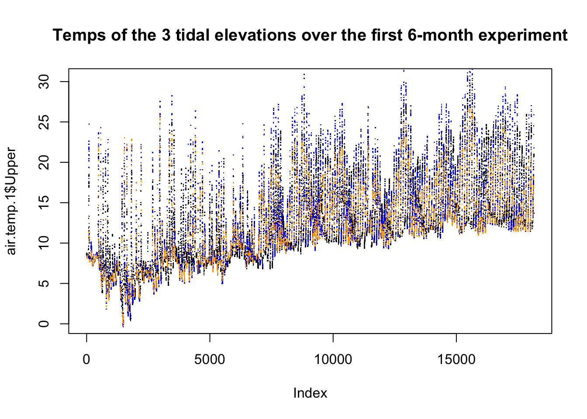
plot(air.temp.2$Upper, pch = ".")
points(air.temp.2$Mid, col = "blue", pch=".")
points(air.temp.2$Low, col = "orange", pch = ".")
title("Temps of the 3 tidal elevations over the second 6-month experiment")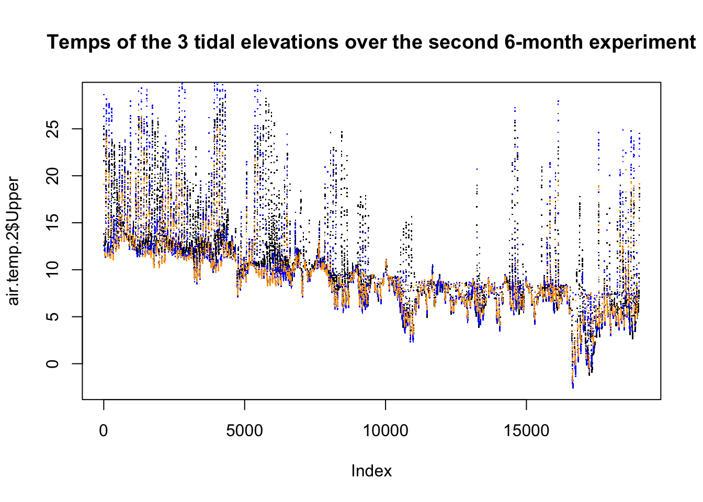
9 Food data
Data found in:
#setwd(“~/Box/Sarah and Molly’s Box/FHL data/SONDE data/Padilla Bay/909184_all_data_2003topresent”)
setwd(“C:/Users/eroberts/Box/Sarah and Molly’s Box/FHL data/SONDE data/Padilla Bay/909184_all_data_2003topresent”)
setwd(“~/Library/CloudStorage/Box-Box/Sarah and Molly’s Box/FHL data/SONDE data/Padilla Bay/909184_all_data_2003topresent/”)
Read in data
PB <- read.csv(here::here("data/environmental_data/PDBGSWQ_dataonly.csv"), stringsAsFactors = FALSE)
#Technically this should be in pdt, but this is being used to calculate weekly averages and lubridate is not working correctly
PB$datetime <-as.POSIXct(PB$m.d.y.hh.mm, format = "%m/%d/%y %H:%M", tz = "UTC")
#subset to only include the past 3 years...
time_zone <- "UTC"
PB_subset <- PB[PB$datetime > as.POSIXct("2017-01-01 00:00:00", tz = "UTC") & PB$datetime< as.POSIXct("2020-01-01 00:00:00", tz = time_zone),]
PB <- PB_subset
plot(PB$datetime, PB$ug.l, pch = ".")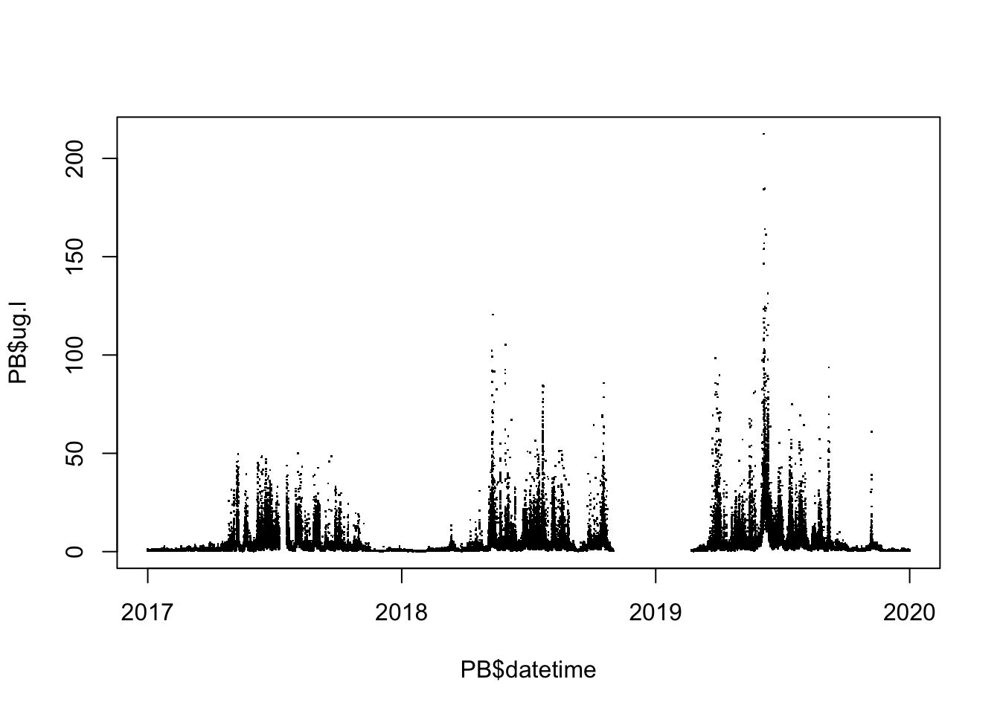
# plot(PB$datetime, PB$psu, pch = ".")vars <-"m.d.y.hh.mm"
dat <- PB %>%
drop_na(ug.l, any_of(vars))%>%
dplyr::group_by(time = week(datetime)) %>%
dplyr::summarise(value = mean(ug.l, na.rm = TRUE), .groups = 'keep')
dat# A tibble: 53 × 2
# Groups: time [53]
time value
<dbl> <dbl>
1 1 0.632
2 2 0.632
3 3 0.611
4 4 0.577
5 5 0.486
6 6 0.731
7 7 0.869
8 8 0.927
9 9 1.11
10 10 1.31
# … with 43 more rowsplot(dat, type = 'b', ylab = "fluorescence (ug/L)", xlab = "week")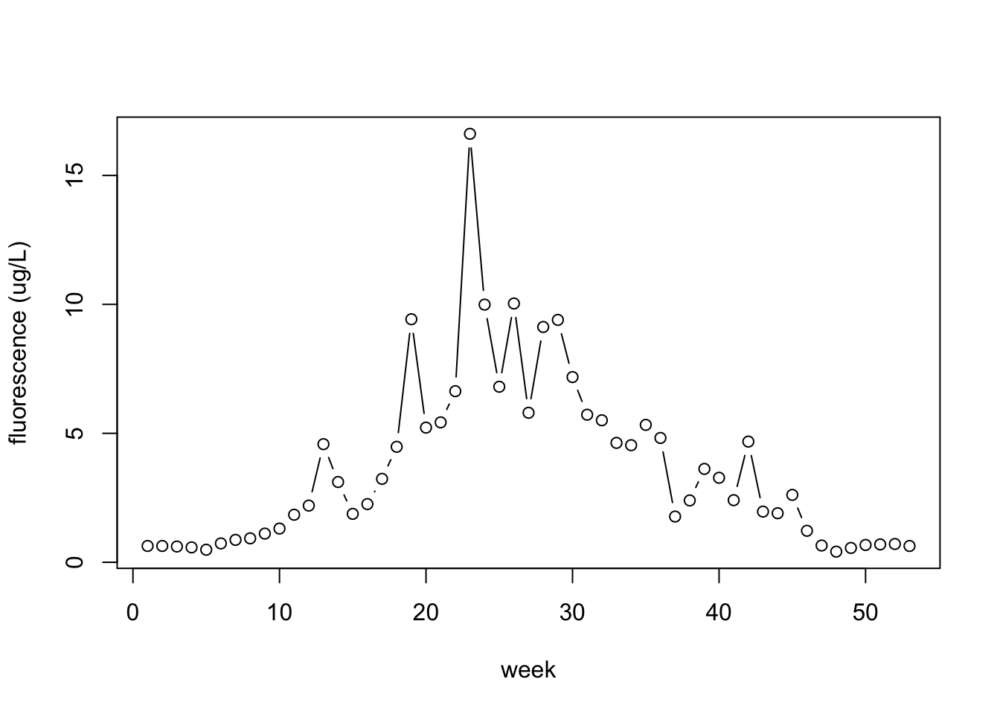
#dat$datetime.2017 <- lubridate::ymd_hms( "2017-01-01 00:00:01" ) + lubridate::weeks( dat$time - 1 )
dat$datetime.2018 <- lubridate::ymd_hms( "2018-01-01 00:00:01" ) + lubridate::weeks( dat$time - 1 )
dat$datetime.2019 <- lubridate::ymd_hms( "2019-01-01 00:00:01" ) + lubridate::weeks( dat$time - 1 )
food <- data.frame(
datetime = as.POSIXct(c(dat$datetime.2018, dat$datetime.2019)),
food = c(dat$value,dat$value)
)
plot(food)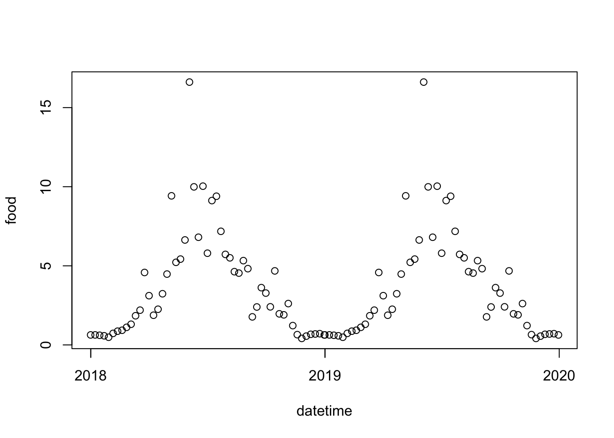
require(zoo)
# Create zoo library objects
zf <- zoo(food$food, food$datetime) # low freq
zt <- zoo(water.temp.1$Upper, water.temp.1$datetime) # high freq
z <- merge(zf,zt,all = TRUE)
z$zf <- na.approx(z$zf, rule=2)
food.interp <- fortify.zoo(z$zf)
names(food.interp) <- c("datetime", "food")
water.temp.1 <- left_join(water.temp.1, food.interp, by = "datetime")
zf <- zoo(food$food, food$datetime) # low freq
zt <- zoo(water.temp.2$Upper, water.temp.2$datetime) # high freq
z <- merge(zf,zt,all = TRUE)
z$zf <- na.approx(z$zf, rule=2)
food.interp <- fortify.zoo(z$zf)
names(food.interp) <- c("datetime", "food")
water.temp.2 <- left_join(water.temp.2, food.interp, by = "datetime")Plots of chlorophyll
if(figs == "Y"){
par(mfrow = c(1,2))
plot(water.temp.1$food~ water.temp.1$datetime,
ylim = c(0,20),
ylab = "Chlorophyll (ug/L)",
xlab = "Date 2018",
pch = ".")
plot(water.temp.2$food~ water.temp.2$datetime,
ylim = c(0,20),
ylab = "",
xlab = "Date 2018-2019",
pch = ".")
}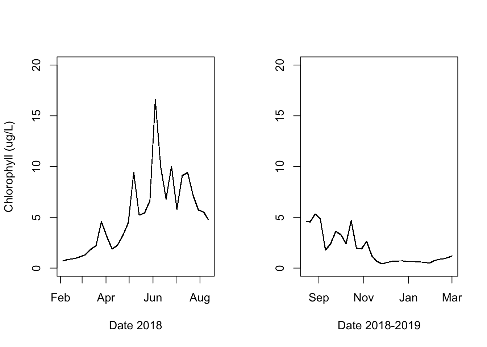
Iter.len.1 <- as.data.frame(matrix(data = 0, ncol = nrow(growth.1), nrow = length(water.temp.1$datetime)))
Iter.len.1[1,] <- growth.1$Feb.Length
Iter.len.2 <- as.data.frame(matrix(data = 0, ncol = nrow(growth.2), nrow = length(water.temp.2$datetime)))
Iter.len.2[1,] <- growth.2$Aug.Length10 Physiology: Thermal performance relationships
Read in feeding, respiration relationships
Feeding ~ Temp, Aquatic Respiration ~ Temp, Aerial Respiration ~ Temp Feeding shrimp per min ~ Temp C, Upslope to 20 degrees
Use a subset of the data, up to 20 degrees to interpolate feeding rate upslope,
Wu and Levings equation with random component, assuming allometric scaling factor
10.0.1 Feeding rate
Feeding shrimp per min ~ Temp C, Upslope to 20 degrees
Using the operculum length allometric factor of 1.88.
Data pulled from here:
#setwd(“~/Box/Sarah and Molly’s Box/FHL data/aqua feeding and resp”) # setwd(“C:/Users/eroberts/Box/Sarah and Molly’s Box/FHL data/aqua feeding and resp”) setwd(“~/Documents/GitHub/Bglandula_FHL_energetics/data/physiology_data”)
#old version of datafile
#feed<- read.table("aqfeedFHL.csv", header = T, sep = ",")
feed<- read.table(here::here("data/physiology_data/aqfeedFHL_log.csv"), header = T, sep = ",")
feed$Temp <- as.factor(feed$Temp)
feed$Temp.n <- as.numeric(as.character(feed$Temp))
feed_subset <- feed[feed$Temp.n <= 17,]
feed <- feed_subset
feed$feedrate.new <- feed$m_filter_300 - feed$a_ave
feed$feedrate <- feed$feedrate.new
feed <- feed[!is.na(feed$feedrate.new),]
feed$ID <- as.factor(feed$ID)
feed$bin <- bin(feed$OperculumLength, nbins = 3) #(4.02,4.97] (4.97,5.91] (5.91,6.86]
feed$sizeclass <- bin(feed$OperculumLength, nbins = 3, labels = c("small", "medium", "large"))
FR_T <- nls(feedrate ~ exp(a*Temp.n) * OperculumLength^(1.88) * c,
data = feed, start = c(a = .1, c = .0004))
summary(FR_T)
Formula: feedrate ~ exp(a * Temp.n) * OperculumLength^(1.88) * c
Parameters:
Estimate Std. Error t value Pr(>|t|)
a 0.0593597 0.0285303 2.081 0.0520 .
c 0.0005550 0.0002197 2.527 0.0211 *
---
Signif. codes: 0 '***' 0.001 '**' 0.01 '*' 0.05 '.' 0.1 ' ' 1
Residual standard error: 0.0158 on 18 degrees of freedom
Number of iterations to convergence: 4
Achieved convergence tolerance: 4.217e-06FR_T_a <- coef(FR_T)[1]
FR_T_c <- coef(FR_T)[2]
FR_T_fun <- function(temp, size, a = FR_T_a, c = FR_T_c) {
out <- exp(a * temp) * size^(1.88) * c
return(out)
}
# Previous version:
# FR_T <- nlme(feedrate ~ exp(a * Temp.n) * OperculumLength^(1.86) * c,
# data = feed,
# fixed = a + c~ 1,
# random = c ~ 1,
# groups = ~ ID,
# start = c(a = -.007, c = 100))
# summary(FR_T)
# FR_T_a <- FR_T$coefficients$fixed[[1]]
# FR_T_c <- FR_T$coefficients$fixed[[2]]
# FR_T_fun <- function(temp, size, a = FR_T_a, c = FR_T_c) {
# out <- exp(a * temp) * size^(1.86) * c
# return(out)
# }
pred.dat.aqua$feedrate <- FR_T_fun(pred.dat.aqua$Temp.n, pred.dat.aqua$OperculumLength)
pred.dat$feedrate <- FR_T_fun(temp = pred.dat$Temp.n, size = pred.dat$OperculumLength)
gg1 <- ggplot(data = pred.dat.aqua,
aes(x = as.numeric(Temp.n),
y=as.numeric(feedrate),
color = OperculumLength, group = as.factor(sizeclass)))+
geom_line()+
scale_color_viridis(option = "D", limits = c(4, 7))+
geom_point(data = feed,aes(x=Temp.n,y=feedrate,color=OperculumLength))+
xlim(5,34)+
ylim(0,.1)+
xlab(expression(paste("Seawater temp (",degree,"C)")))+
ylab("Prey per minute (min -1)")
gg1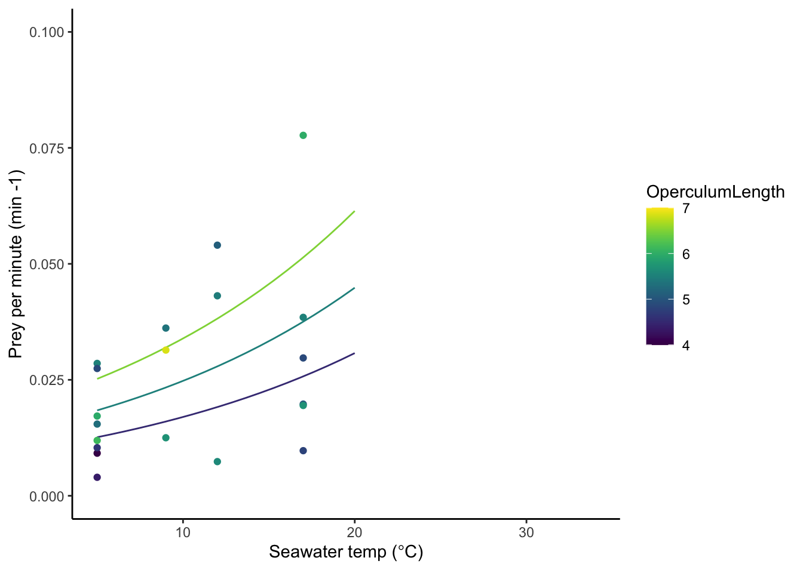
10.1 Aquatic respiration (umol oxygen per min) ~ Temp (deg C)
Upslope to 23 degrees
Use a subset of the data, up to 23 degrees to interpolate respiration rate upslope,
Wu and Levings equation with random component, assuming allometric scaling factor
Previously found:
setwd(“~/Box/Sarah and Molly’s Box/FHL data/aqua feeding and resp”) setwd(“C:/Users/eroberts/Box/Sarah and Molly’s Box/FHL data/aqua feeding and resp”)
resp<- read.table(here::here("data/physiology_data/AQtotalresp_FHL.csv"), header = T, sep = ",")
resp$Temp<- as.factor(resp$Temp)
resp$Operc [1] 5.11 5.11 5.11 5.99 5.99 5.99 5.03 5.03 5.03 5.75 5.75 5.75 5.22 5.22 4.87
[16] 4.87 4.87 5.86 5.86 5.86 4.63 4.63 4.63 5.77 5.77 5.77 5.46 5.46 5.46 4.50
[31] 4.50 4.50 5.07 5.07 5.07 5.70 5.70 5.70 4.95 4.95 4.95 5.29 5.29 5.29 4.80
[46] 4.80 4.80 5.05 5.05 5.05 4.70 4.70 4.70 5.51 5.51 5.51 5.51 5.51 5.51 5.60
[61] 5.60 5.60resp$ID <- as.factor(resp$Barnacle)
resp$Temp.n <- as.numeric(as.character(resp$Temp))
resp$sizeclass <- bin(resp$Operc, nbins = 3, labels = c("small", "medium", "large"))
resp$bin <- bin(resp$Operc, nbins = 3) #(4.02,4.97] (4.97,5.91] (5.91,6.86]
resp_below_23 <- resp[resp$Temp.n < 23,] #Changed 2020 Aug 12
resp <- resp_below_23
AQR_T <- nlme(Respiration.Rate ~ c * exp(a * Temp.n) * Operc^1.88,
data = resp,
fixed = a + c ~ 1,
random = c ~ 1,
groups = ~ ID,
start = c(a = 0.0547657, c = 0.0003792))
summary(AQR_T) Nonlinear mixed-effects model fit by maximum likelihood
Model: Respiration.Rate ~ c * exp(a * Temp.n) * Operc^1.88
Data: resp
AIC BIC logLik
-379.3246 -372.1878 193.6623
Random effects:
Formula: c ~ 1 | ID
c Residual
StdDev: 9.908437e-09 0.002966555
Fixed effects: a + c ~ 1
Value Std.Error DF t-value p-value
a 0.08030545 0.04076867 22 1.969783 0.0616
c 0.00003485 0.00002405 22 1.448871 0.1615
Correlation:
a
c -0.966
Standardized Within-Group Residuals:
Min Q1 Med Q3 Max
-1.4500246 -0.7135749 -0.2393238 0.4736441 2.2773886
Number of Observations: 44
Number of Groups: 21 AQR_T_a <- AQR_T$coefficients$fixed[[1]]
AQR_T_c <- AQR_T$coefficients$fixed[[2]]
AQR_T_fun <- function(temp, size, c = AQR_T_c, a = AQR_T_a) {
out <- c * exp(a * temp) * size^1.88
return(out)
}
pred.dat.aqua$aq_resp <- AQR_T_fun(temp = pred.dat.aqua$Temp.n, size = pred.dat.aqua$OperculumLength)
pred.dat$aq_resp <- AQR_T_fun(temp = pred.dat$Temp.n, size = pred.dat$OperculumLength)
if(figs == "Y"){
# ggplot(resp,aes(x=Temp.n,y=Respiration.Rate,color=factor(sizeclass)))+
# geom_point()+
# geom_line(data = pred.dat.aqua,
# aes(x = as.numeric(Temp.n),
# y=as.numeric(aq_resp),
# color = factor(sizeclass)))+
# xlim(5,18)+
# ylim(0,.01)
resp_aq <- resp
gg2 <- ggplot(resp_aq,aes(x=Temp.n,y=Respiration.Rate,color=Operc))+
geom_point()+
scale_color_viridis(option = "D", limits = c(4,7))+
geom_line(data = pred.dat.aqua,
aes(x = as.numeric(Temp.n),
y=as.numeric(aq_resp),
color = OperculumLength, group = as.factor(sizeclass)))+
xlim(5,34)+
# ylim(0,.01)+
xlab(expression(paste("Seawater temp (",degree,"C)")))+
ylab("Aquatic repiration (umol min -1)")
gg2
}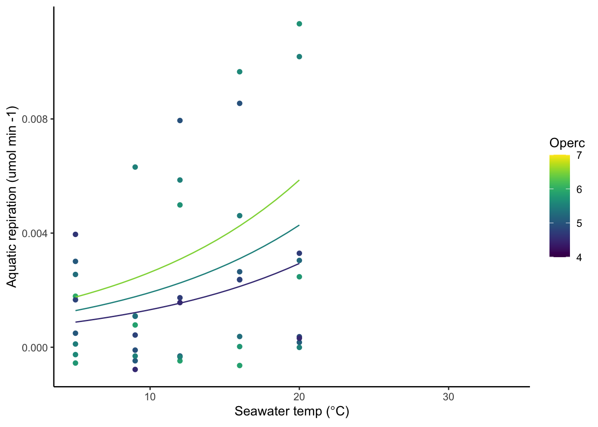
10.2 Aerial exposure respiration (umol oxygen per 15 min) ~ Temp (deg C)
Upslope to 25 deg, 30 deg, and quadratic
Two hypotheses: Upslope vs. unimodal hypothesis
Data originally here:
setwd(“~/Box/Sarah and Molly’s Box/FHL data/aerial resp”) setwd(“C:/Users/eroberts/Box/Sarah and Molly’s Box/FHL data/aerial resp”)
resp<- read.csv(here::here("data/physiology_data/FHLmean15mins_recovery_forMolly_40deg.csv"), stringsAsFactors = FALSE, header = T, sep = ",")
resp$Temp<- as.factor(resp$Temp)
resp$Operc <- resp$operculum_length
resp$Temp.n <- as.numeric(as.character(resp$Temp))
resp$Respiration.Rate <- resp$air_15min
resp$Barnacle <- as.factor(resp$Barnacle)
resp$sizeclass <- bin(resp$Operc, nbins = 3, labels = c("small", "medium", "large"))
resp$bin <- bin(resp$Operc, nbins = 3) #(4.02,4.97] (4.97,5.91] (5.91,6.86]
resp_below_30 <- resp[resp$Temp.n <= 30,]
resp_below_25 <- resp[resp$Temp.n <= 25,]AER_EXPOSE_T_25 <- nlme(Respiration.Rate ~ c * exp(a * Temp.n) * Operc^2.32,
data = resp_below_25,
fixed = a + c ~ 1,
random = c ~ 1,
groups = ~ Barnacle,
start = c(a = 0.0547657, c = 0.0003792))
summary(AER_EXPOSE_T_25) Nonlinear mixed-effects model fit by maximum likelihood
Model: Respiration.Rate ~ c * exp(a * Temp.n) * Operc^2.32
Data: resp_below_25
AIC BIC logLik
-79.53297 -73.1989 43.76649
Random effects:
Formula: c ~ 1 | Barnacle
c Residual
StdDev: 2.586767e-08 0.07174233
Fixed effects: a + c ~ 1
Value Std.Error DF t-value p-value
a 0.06727408 0.018785384 14 3.581193 0.0030
c 0.00072931 0.000296084 14 2.463202 0.0273
Correlation:
a
c -0.976
Standardized Within-Group Residuals:
Min Q1 Med Q3 Max
-2.0695968 -0.7307817 -0.1549091 0.5659112 2.0172261
Number of Observations: 36
Number of Groups: 21 AER_EXPOSE_T_25_a <- AER_EXPOSE_T_25$coefficients$fixed[[1]]
AER_EXPOSE_T_25_c <- AER_EXPOSE_T_25$coefficients$fixed[[2]]AER_EXPOSE_T_30 <- nlme(Respiration.Rate ~ c * exp(a * Temp.n) * Operc^2.32,
data = resp_below_30,
fixed = a + c ~ 1,
random = c ~ 1,
groups = ~ Barnacle,
start = c(a = 0.0547657, c = 0.0003792))
summary(AER_EXPOSE_T_30) Nonlinear mixed-effects model fit by maximum likelihood
Model: Respiration.Rate ~ c * exp(a * Temp.n) * Operc^2.32
Data: resp_below_30
AIC BIC logLik
-101.7062 -94.47956 54.85311
Random effects:
Formula: c ~ 1 | Barnacle
c Residual
StdDev: 4.49608e-08 0.07151154
Fixed effects: a + c ~ 1
Value Std.Error DF t-value p-value
a 0.04562355 0.011564376 23 3.945181 0.0006
c 0.00105427 0.000304119 23 3.466623 0.0021
Correlation:
a
c -0.967
Standardized Within-Group Residuals:
Min Q1 Med Q3 Max
-1.96859864 -0.61433908 -0.05521089 0.46918810 1.96195111
Number of Observations: 45
Number of Groups: 21 AER_EXPOSE_T_30_a <- AER_EXPOSE_T_30$coefficients$fixed[[1]]
AER_EXPOSE_T_30_c <- AER_EXPOSE_T_30$coefficients$fixed[[2]]AER_EXPOSE_T_all <- nlme(Respiration.Rate ~ c * exp(a1*Temp.n) * exp(a2*Temp.n^2) * Operc^2.32,
data = resp,
fixed = a1 + a2 + c ~ 1,
random = c ~ 1,
groups = ~ Barnacle,
start = c(a1 = 2.201e-01, a2 = -4.623e-03, c = 1.433e-05))
summary(AER_EXPOSE_T_all) Nonlinear mixed-effects model fit by maximum likelihood
Model: Respiration.Rate ~ c * exp(a1 * Temp.n) * exp(a2 * Temp.n^2) * Operc^2.32
Data: resp
AIC BIC logLik
-134.7807 -124.065 72.39035
Random effects:
Formula: c ~ 1 | Barnacle
c Residual
StdDev: 1.911226e-09 0.07668941
Fixed effects: a1 + a2 + c ~ 1
Value Std.Error DF t-value p-value
a1 0.19135365 0.05626881 40 3.400706 0.0015
a2 -0.00335510 0.00105077 40 -3.192979 0.0027
c 0.00025335 0.00018253 40 1.388047 0.1728
Correlation:
a1 a2
a2 -0.988
c -0.979 0.938
Standardized Within-Group Residuals:
Min Q1 Med Q3 Max
-2.0738357 -0.7486660 -0.2012656 0.4367642 3.4985767
Number of Observations: 63
Number of Groups: 21 AER_EXPOSE_T_all_a1 <- AER_EXPOSE_T_all$coefficients$fixed[[1]]
AER_EXPOSE_T_all_a2 <- AER_EXPOSE_T_all$coefficients$fixed[[2]]
AER_EXPOSE_T_all_c <- AER_EXPOSE_T_all$coefficients$fixed[[3]]Set functions
# Aerial exposure respiration rate
AER_EXPOSE_T_25_fcn <- function(temp, size, c = AER_EXPOSE_T_25_c, a = AER_EXPOSE_T_25_a) {
out <- c * exp(a * temp) * size^2.32
return(out)
}
AER_EXPOSE_T_30_fcn <- function(temp, size, c = AER_EXPOSE_T_30_c, a = AER_EXPOSE_T_30_a) {
out <- c * exp(a * temp) * size^2.32
return(out)
}
AER_EXPOSE_T_all_fcn <- function(temp, size, c = AER_EXPOSE_T_all_c, a1 = AER_EXPOSE_T_all_a1, a2 = AER_EXPOSE_T_all_a2) {
out <- c * exp(a1 * temp) * exp(a2 * temp^2) * size^2.32
return(out)
}10.2.0.1 Compare predicted respiration curves from aerial exposure.
The dashed line indicates the growth curve when data up to 25C is used.
The solid line indicates the growth curve when data up to 30C is used.
# predicted values of respiration at a particular size and temp, above and below the graph axis limits won't be included on the graph, and this will produce an unnecessary warning
# Predicted values based on temp and size and function
pred.dat$pred_25 <- AER_EXPOSE_T_25_fcn(pred.dat$Temp.n, pred.dat$Operc)
pred.dat$pred_30 <- AER_EXPOSE_T_30_fcn(pred.dat$Temp.n, pred.dat$Operc)
pred.dat$pred_all <- AER_EXPOSE_T_all_fcn(pred.dat$Temp.n, pred.dat$Operc)
pred.dat.air$pred_25 <- AER_EXPOSE_T_25_fcn(pred.dat.air$Temp.n, pred.dat.air$Operc)
pred.dat.air$pred_30 <- AER_EXPOSE_T_30_fcn(pred.dat.air$Temp.n, pred.dat.air$Operc)
pred.dat.air$pred_all <- AER_EXPOSE_T_all_fcn(pred.dat.air$Temp.n, pred.dat.air$Operc)
pred.dat.air$air_resp_exposure_25 <- AER_EXPOSE_T_25_fcn(temp = pred.dat.air$Temp.n, size = pred.dat.air$OperculumLength)
pred.dat.air$air_resp_exposure_30 <- AER_EXPOSE_T_30_fcn(temp = pred.dat.air$Temp.n, size = pred.dat.air$OperculumLength)
pred.dat.air$air_resp_exposure_all <- AER_EXPOSE_T_all_fcn(temp = pred.dat.air$Temp.n, size = pred.dat.air$OperculumLength)
if(figs == "Y"){
# ggplot(resp,aes(x=Temp.n,y=Respiration.Rate,color=factor(sizeclass)))+
# geom_point()+
# ylab("Aerial Respiration (umol per 15 min)") +
# xlab("Temp (deg C)")+
# geom_line(data = pred.dat, aes(x = as.numeric(Temp.n),
# y=as.numeric(pred_30), color = factor(sizeclass)), linetype = "dashed")+
# geom_line(data = pred.dat, aes(x = as.numeric(Temp.n),
# y=as.numeric(pred_all), color = factor(sizeclass)), linetype = "dotted")+
# geom_line(data = pred.dat, aes(x = as.numeric(Temp.n),
# y=as.numeric(pred_25), color = factor(sizeclass)), linetype = "solid")
resp_exp <- resp
gg3 <- ggplot(resp_exp,aes(x=Temp.n,y=Respiration.Rate/15,color=Operc))+
geom_point()+
scale_color_viridis(option = "D", limits = c(4,7))+
geom_line(data = pred.dat.air,
aes(x = as.numeric(Temp.n),
y=as.numeric(pred_25)/15,
color = OperculumLength, group = as.factor(sizeclass)), linetype = "dashed")+
geom_line(data = pred.dat.air,
aes(x = as.numeric(Temp.n),
y=as.numeric(pred_30)/15,
color = OperculumLength, group = as.factor(sizeclass)))+
xlim(5,34)+
ylim(0,.03)+
xlab(expression(paste("Low tide temp (",degree,"C)")))+
ylab("Aerial repiration during exposure \n (umol per min)")
gg3
}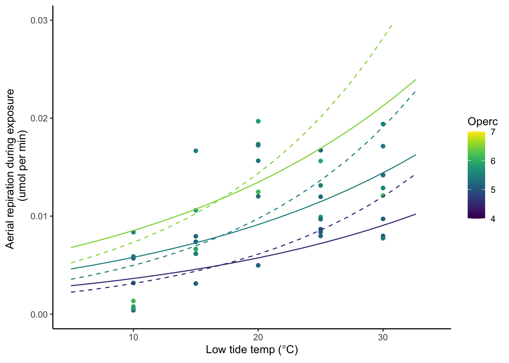
10.3 Aerial recovery respiration ~ Temp
We start with umol oxygen total, but then calculate umol oxygen per 15 min exposure # Upslope to 30 deg C
Two hypotheses: Upslope vs. unimodal hypothesis
Original file location:
setwd(“~/Box/Sarah and Molly’s Box/FHL data/aerial resp”) setwd(“C:/Users/eroberts/Box/Sarah and Molly’s Box/FHL data/aerial resp”)
#setwd("~/Documents/GitHub/Bglandula_FHL_energetics/data/physiology_data")
resp<- read.csv(here::here("data/physiology_data/FHLmean15mins_recovery_forMolly_40deg.csv"), stringsAsFactors = FALSE, header = T, sep = ",")
resp$Temp<- as.factor(resp$Temp)
resp$Operc <- resp$operculum_length
resp$Temp.n <- as.numeric(as.character(resp$Temp))
resp$Barnacle <- as.factor(resp$Barnacle)
resp$Respiration.Rate <- resp$total_aquat
resp$sizeclass <- bin(resp$Operc, nbins = 3, labels = c("small", "medium", "large"))
resp$bin <- bin(resp$Operc, nbins = 3) #(4.02,4.97] (4.97,5.91] (5.91,6.86]
# ramp.time <- (resp$Temp.n-10)/10 * 1
# time.at.temp <- 5 - ramp.time
# plot(resp$Temp.n, time.at.temp*60)
resp_below_30 <- resp[resp$Temp.n <= 30,]
AER_RECOVER_T_30 <- nlme(Respiration.Rate ~ c * exp(a * Temp.n) * Operc^2.32,
data = resp_below_30,
fixed = a + c ~ 1,
random = c ~ 1,
groups = ~ Barnacle,
start = c(a = 0.0547657, c = 0.0003792))
summary(AER_RECOVER_T_30)Nonlinear mixed-effects model fit by maximum likelihood
Model: Respiration.Rate ~ c * exp(a * Temp.n) * Operc^2.32
Data: resp_below_30
AIC BIC logLik
123.8877 131.1143 -57.94383
Random effects:
Formula: c ~ 1 | Barnacle
c Residual
StdDev: 0.005496651 0.760159
Fixed effects: a + c ~ 1
Value Std.Error DF t-value p-value
a 0.02533049 0.007438323 23 3.405403 0.0024
c 0.02677801 0.004731447 23 5.659582 0.0000
Correlation:
a
c -0.922
Standardized Within-Group Residuals:
Min Q1 Med Q3 Max
-1.57906671 -0.55250687 0.04581654 0.59614921 2.87270684
Number of Observations: 45
Number of Groups: 21 AER_RECOVER_T_30_a <- AER_RECOVER_T_30$coefficients$fixed[[1]]
AER_RECOVER_T_30_c <- AER_RECOVER_T_30$coefficients$fixed[[2]]
resp_below_25 <- resp[resp$Temp.n <= 25,]
AER_RECOVER_T_25 <- nlme(Respiration.Rate ~ c * exp(a * Temp.n) * Operc^2.32,
data = resp_below_25,
fixed = a + c ~ 1,
random = c ~ 1,
groups = ~ Barnacle,
start = c(a = 0.0547657, c = 0.0003792))
summary(AER_RECOVER_T_25)Nonlinear mixed-effects model fit by maximum likelihood
Model: Respiration.Rate ~ c * exp(a * Temp.n) * Operc^2.32
Data: resp_below_25
AIC BIC logLik
104.9978 111.3319 -48.49889
Random effects:
Formula: c ~ 1 | Barnacle
c Residual
StdDev: 3.379089e-07 0.9307663
Fixed effects: a + c ~ 1
Value Std.Error DF t-value p-value
a 0.02535853 0.012637535 14 2.006604 0.0645
c 0.02827648 0.007020458 14 4.027726 0.0012
Correlation:
a
c -0.961
Standardized Within-Group Residuals:
Min Q1 Med Q3 Max
-1.90771877 -0.54742747 -0.03751482 0.85742531 2.64338811
Number of Observations: 36
Number of Groups: 21 AER_RECOVER_T_25_a <- AER_RECOVER_T_25$coefficients$fixed[[1]]
AER_RECOVER_T_25_c <- AER_RECOVER_T_25$coefficients$fixed[[2]]
AER_RECOVER_T_all <- nlme(Respiration.Rate ~ c * exp(a1*Temp.n) * exp(a2*Temp.n^2) * Operc^2.32,
data = resp,
fixed = a1 + a2 + c ~ 1,
random = c ~ 1,
groups = ~ Barnacle,
start = c(a1 = 2.201e-01, a2 = -4.623e-03, c = 1.433e-05))
summary(AER_RECOVER_T_all)Nonlinear mixed-effects model fit by maximum likelihood
Model: Respiration.Rate ~ c * exp(a1 * Temp.n) * exp(a2 * Temp.n^2) * Operc^2.32
Data: resp
AIC BIC logLik
167.9247 178.6404 -78.96236
Random effects:
Formula: c ~ 1 | Barnacle
c Residual
StdDev: 2.575648e-07 0.8474125
Fixed effects: a1 + a2 + c ~ 1
Value Std.Error DF t-value p-value
a1 0.14556719 0.03740761 40 3.891380 0.0004
a2 -0.00320245 0.00077591 40 -4.127322 0.0002
c 0.01014330 0.00428424 40 2.367581 0.0228
Correlation:
a1 a2
a2 -0.984
c -0.973 0.923
Standardized Within-Group Residuals:
Min Q1 Med Q3 Max
-2.18678256 -0.71760458 -0.03881334 0.67003322 2.61192546
Number of Observations: 63
Number of Groups: 21 AER_RECOVER_T_all_a1 <- AER_RECOVER_T_all$coefficients$fixed[[1]]
AER_RECOVER_T_all_a2 <- AER_RECOVER_T_all$coefficients$fixed[[2]]
AER_RECOVER_T_all_c <- AER_RECOVER_T_all$coefficients$fixed[[3]]AER_RECOVER_T_25_fcn <- function(temp, size, c = AER_RECOVER_T_25_c, a = AER_RECOVER_T_25_a) {
out <- c * exp(a * temp) * size^2.32
return(out)
}
AER_RECOVER_T_30_fcn <- function(temp, size, c = AER_RECOVER_T_30_c, a = AER_RECOVER_T_30_a) {
out <- c * exp(a * temp) * size^2.32
return(out)
}
AER_RECOVER_T_all_fcn <- function(temp, size, c = AER_RECOVER_T_all_c, a1 = AER_RECOVER_T_all_a1, a2 = AER_RECOVER_T_all_a2) {
out <- c * exp(a1 * temp) * exp(a2 * temp^2) * size^2.32
return(out)
}
# Here I need to add the weirdness bit to account for time... but after I calc this is OK... Again the dashed line represents the fit if data up to 25C is used.
The solid line represents the fit if data up to 30C is used.
pred.dat$pred_25 <- AER_RECOVER_T_25_fcn(pred.dat$Temp.n, pred.dat$Operc)
pred.dat$pred_30 <- AER_RECOVER_T_30_fcn(pred.dat$Temp.n, pred.dat$Operc)
pred.dat$pred_all <- AER_RECOVER_T_all_fcn(pred.dat$Temp.n, pred.dat$Operc)
pred.dat.air$pred_25 <- AER_RECOVER_T_25_fcn(pred.dat.air$Temp.n, pred.dat.air$Operc)
pred.dat.air$pred_30 <- AER_RECOVER_T_30_fcn(pred.dat.air$Temp.n, pred.dat.air$Operc)
pred.dat.air$pred_all <- AER_RECOVER_T_all_fcn(pred.dat.air$Temp.n, pred.dat.air$Operc)
if(figs == "Y"){
# ggplot(resp,aes(x=Temp.n,y=Respiration.Rate,color=factor(sizeclass)))+
# geom_point()+
# ylab("Aerial recover respiration (total umol)") +
# xlab("Temp (deg C)")+
# # geom_line(data = pred.dat, aes(x = as.numeric(Temp.n),
# # y=as.numeric(pred_all), color = factor(sizeclass)), linetype = "dashed")+
# geom_line(data = pred.dat, aes(x = as.numeric(Temp.n),
# y=as.numeric(pred_30), color = factor(sizeclass)), linetype = "dotted")+
# geom_line(data = pred.dat, aes(x = as.numeric(Temp.n),
# y=as.numeric(pred_25), color = factor(sizeclass)), linetype = "solid")
resp_recov <- resp
gg4 <- ggplot(resp_recov,aes(x=Temp.n,y=Respiration.Rate,color=Operc))+
geom_point()+
scale_color_viridis(option = "D", limits = c(4,7))+
geom_line(data = pred.dat.air,
aes(x = as.numeric(Temp.n),
y=as.numeric(pred_25),
color = OperculumLength, group = as.factor(sizeclass)), linetype = "dashed")+
geom_line(data = pred.dat.air,
aes(x = as.numeric(Temp.n),
y=as.numeric(pred_30),
color = OperculumLength, group = as.factor(sizeclass)))+
xlim(5,34)+
#ylim(0,.01)+
xlab(expression(paste("Low tide temp (",degree,"C)")))+
ylab("Aerial recovery total respiration \n (total umol)")
gg4
}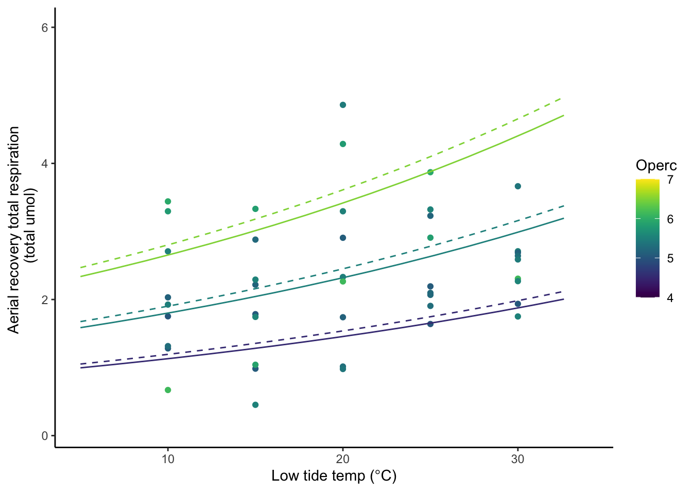
ggarrange(gg1,gg3,gg2,gg4, ncol=2, nrow=2, common.legend = TRUE, legend="bottom")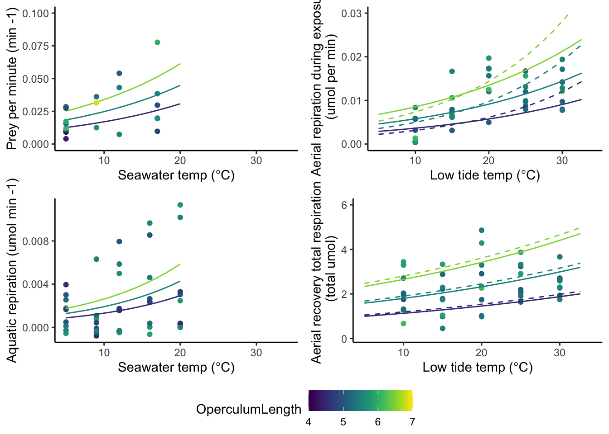